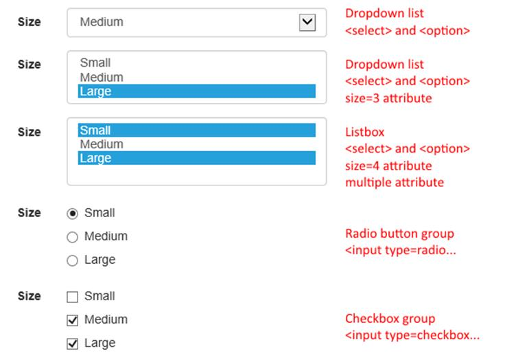
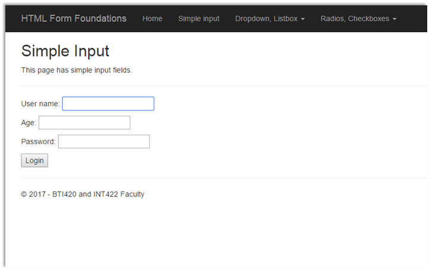
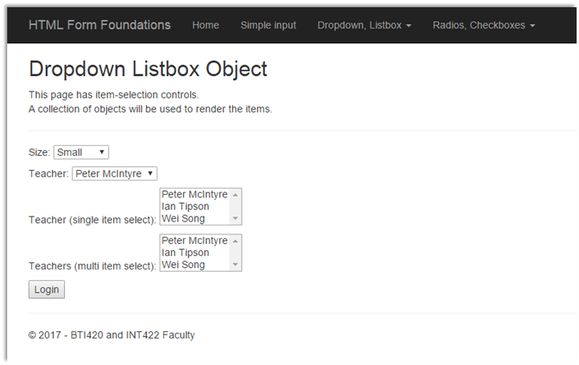
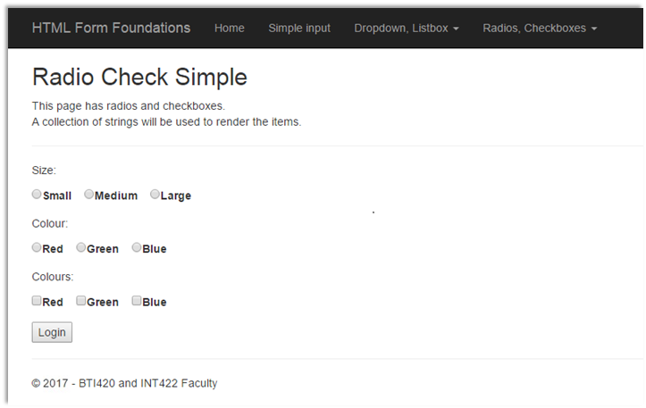
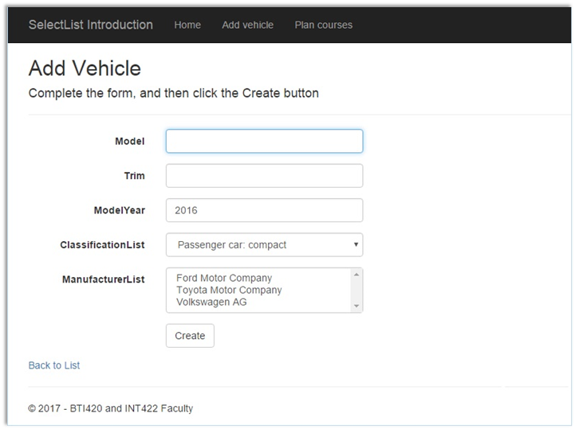
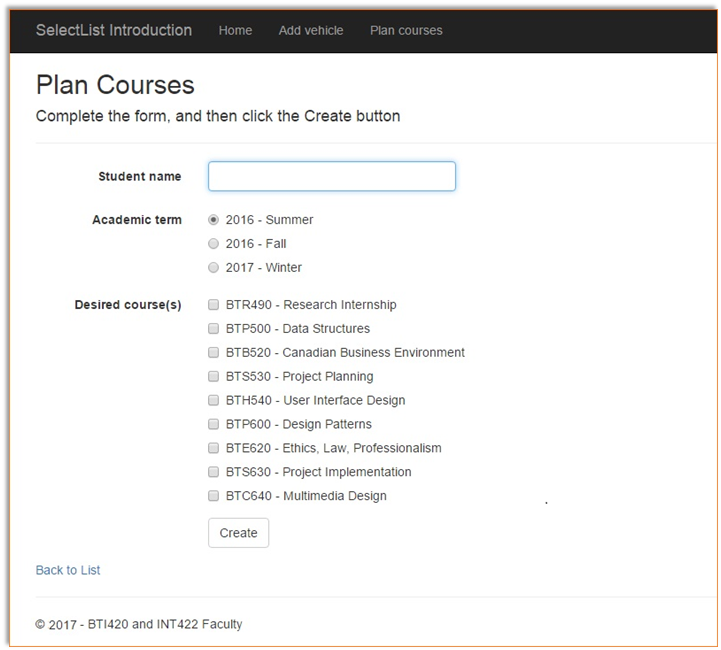
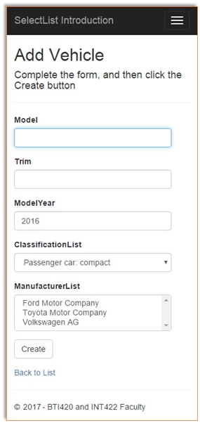
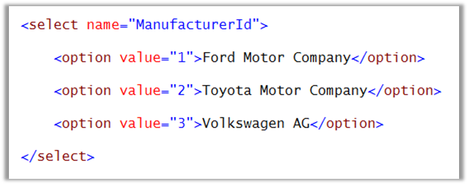

INT422 – Lecture 5
HTML Forms with associated data.
Test today
Test 4 is today, at the beginning of the timeslot, and will run approximately 12 minutes.
Textbook coverage
As announced last week, the textbook will have a supporting role as you learn new topics from these notes and your classroom sessions. Use the table-of-contents and the index to locate the topic, and then read about it there. A reminder: The textbook does not use view model classes in its discussions and code examples. We do.
Code examples
HTML Form Foundations
SelectList Introduction
Theme for today
Last week, we learned to display data from associated entities.
Today, we will begin to learn how to implement add and edit patterns for associated entities. Here’s a list of topics, in sequence:
Remember that the key objective for this course is: Create interactive web apps, which have some complexity, and can scale. This week’s topics help us make progress.
Before we begin…
At this point in time, you know something about these topics:
Several times, you have used the Visual Studio scaffolders to create a view. The scaffolder provides an easy way to generate view source code for common scenarios (list, details, create, edit, and delete).
Then, you have hand-edited the view source code, to change titles and other text. More recently, and in Assignment 4, you have added more HTML markup and code expressions, to render (for example) an HTML Table for invoice line items.
When scaffolding a view to handle “add new” or “edit existing”, you have noticed that the scaffolder generates a large amount of view source code. The HTML Form elements are enclosed in nested <div> containers, and most include one or more “class” attributes.
Finally, these views have several HTML Helper code expressions. Your introductory knowledge of HTML Helpers (from in-class discussion, and from the textbook and other resources) is that they enable the Razor view engine to render an HTML element for the browser.
In summary, you have some knowledge of, and experience with, several topics that are needed for you to make progress today with the new topics.
Foundation topics overview
We have a BIG set of topics today. Take your time as you learn them.
As indicated in the “theme for today” above, implementing add and edit patterns for associated data requires you to be comfortable with HTML Form concepts and coding techniques.
We have taken advantage of the Visual Studio scaffolder, to generate source code for views. We have done this for display-only views (using the List or Details template), and also for data modification views (using the Create or Edit template).
Display-only views
The scaffolder does a reasonably good job at rendering display-only views.
As you have noticed, it renders a collection in an HTML Table, and an object in an HTML Description List. The data items are rendered in these elements, and/or often in <div> or <span> elements.
In the first number of code examples (and topic coverage), we deliberately constrained the scaffolder’s activities, by working with a non-associated data entity (object or collection) on each view.
If you have re-created last week’s AssocOneToMany code example, or worked on Assignment 4, you have probably noticed that the scaffolder does NOT render associated objects or collections.
How does the scaffolder work with associated data? When working with associated data, we often need to use an item-selection element (control).
Data modification views
The scaffolder does a reasonably good job at rendering views for add-new, edit-existing, and delete-item.
As you have noticed, it renders input fields (for many kinds of data) and buttons. But that’s it – the scaffolder is limited in what it can render. For example, the scaffolder – in its default usage – will NOT render an item-selection element (e.g. a dropdown list, or a checkbox group).
Here’s a table that summarizes the HTML Form elements that are scaffolded:
|
HTML Form element |
Scaffolded? |
|
Label |
Yes |
|
Text box |
Yes |
|
Multiline text area |
Yes |
|
Button |
Yes |
|
Hidden |
Yes |
|
Dropdown list (select) |
No |
|
Listbox (select, multiple) |
No |
|
Radio button group |
No |
|
Checkbox group |
No |
Well, that’s a problem. Often, we need to add an item-selection element to an HTML Form, especially in situations where we do data modification on associated entities.
Is there a solution? Yes – hand-coding. However, we can get some help by using good design and coding techniques, and by using some custom HTML Helpers and/or and-coded HTML.
Item-selection elements for HTML Forms
In the sections below, you will learn design and coding techniques for working with item-selection elements in ASP.NET MVC web apps.

Hand-editing item-selection elements
The strategy we will use combines the scaffolder with hand-coding:
Continue to use the scaffolder to generate source code for views that will work with associated data.
Then, plan on hand-editing the code, to add and configure the item-selection elements that you need.
Generating data for the item-selection element
All item-selection elements need data for its items. Where does the data come from?
The passed-in data will be, or have, a collection that can be used to render the items. In the controller, we can create a simple collection of strings for example, as a List<string>. Then, pass it to the view. Then, use the collection to render the items (in some kind of for or foreach loop). Later, you will learn about and then use a special-purpose object (a SelectList) to hold the items.
Passing data to the view
How do we pass the data to the view?
The best practice is to create another view model class, which has a property for the collection. Recently (in Assignment 3), you learned how to create a view model class named “EmployeeContactInfoForm”, which had the data needed on the HTML Form.
We continue to use this concept, for ALL scenarios in which we need to send data to the HTML Form.
❝In summary,
we create and use two view model classes for “add new” and “edit existing” use cases. For example, assume that we are coding the “add new” use case:
A view model class named EmployeeAddForm is used to package and send data to the HTML Form in the browser.
Another view model class named EmployeeAdd is used to describe the shape of the data submitted by the browser user.
HTML Form elements and the “name” attribute
Next, a fundamental idea is that the value of the “name” attribute of an HTML Forms element is used to identify or “name” the data that is submitted (posted) by the browser user. For example, an <input name=Username /> element will render a textbox. When the form is submitted, your controller code has access to the data by using the “Username” property/variable. The same idea applies to item-selection elements.
Here’s an overview – and reminder about – coding techniques for item-selection elements.
While you are reading these scenarios, open the HTMLFormFoundations code example, and study the appropriate view source code objects.
Dropdown list
This is rendered by a <select> element, with <option> descendants. It permits the selection of one item.
❝Alternatively, it can be rendered with a DropDownList HTML Helper, explained later.
As noted above, each <option> item is configured with a “name” attribute and value. When the HTML Form is submitted, the controller code can access the data (described next) by using the variable name in the attribute’s value.
Each <option> item is configured with a non-visible “value” attribute and value, which is intended to be the item’s unique identifier. When the HTML Form is submitted, the controller code can use the data in the attribute’s value.
Listbox
This is also rendered by a <select> element, with <option> descendants. Add a “size” attribute and (an integer) value to the <select> element, and the vertical height will allow that number of items to be visible.
In this configuration, it is not necessary for the user to select an item. However, if desired, it does permit the selection of one item.
❝Alternatively, it also can be rendered with a DropDownList HTML Helper.
If you wish to permit the selection of multiple items on the list (using the Ctrl or Command keys), then add a “multiple” attribute to the <select> element.
❝Alternatively, it can also be rendered with a ListBox HTML Helper, explained later.
The “name” and “value” attributes (and values) are configured in a manner similar to the dropdown list.
Radio button group (aka “radios”)
This is rendered by multiple <input type=radio> elements. It permits the selection of one item in the group.
The “name” and “value” attributes (and values) are configured in a manner similar to the elements above. A best practice is to wrap each in a <label> element.
Checkbox group (aka “checkboxes”)
This is rendered by multiple <input type=checkbox> elements. It permits the selection of multiple items in the group.
The “name” and “value” attributes (and values) are configured in a manner similar to the elements above. A best practice is to wrap each in a <label> element.
Submitting data (posting) from the browser user
As you know from the past, and reinforced above, data entered on an HTML Form will enter a controller method when submitted (or posted back) by the browser user.
In PHP, you know that the data was available in the $_POST global predefined variable.
In ASP.NET MVC, although the data was available in a FormCollection object (and therefore in a format similar to the PHP associative array), we almost always use strong typing, by specifying a view model class as the parameter in the controller method.
For an HTML Forms element, the value of the “name” attribute MUST match a property name in the view model class. When submitted, the body of the POST request will include the data as an encoded name-value pair. For example, an <input name=Email /> textbox, in which the user enters “peter@example.com”, will submit “Email=peter@example.com”. The ASP.NET MVC runtime will attempt to convert non-string data into usable values (e.g. int, double, DateTime).
What happens with an item-selection element, for a single-select scenario? As you would expect, the “name” attribute MUST match a property name in the view model class. The property type type could be string, or int, but usually int.
How about a multiple-select scenario? Well, same approach as above, but the view model class property type MUST be a collection of int (usually IEnumerable<int>, initialized as List<int> in the constructor).
Learning from the code example
When you studied and ran the HTMLFormFoundations code example, you should have noticed that the item-selection elements were coded with…
Then, you should have noticed how the item-selection elements were rendered in the browser.
Ugly.
Yes, the views are not pretty. These HTML Forms do not use the same styling that we have seen on other scaffolded forms. The spacing is wrong. Alignment is terrible.



Why is it the way it is? The elements have not yet been styled.
Can we fix? Yes.
Introduction to Bootstrap for new ASP.NET MVC programmers
Bootstrap is a framework that helps us develop responsive and mobile-compatible web apps.
The awesomeness was created by Mark Otto and Jacob Thornton, then with Twitter. It is an open source project. You can read more about Bootstrap in this Wikipedia article.
All ASP.NET MVC web apps include the Bootstrap framework.
OK, it’s a framework, but really what is Bootstrap?
At its core, it is a set of CSS rules. Most are implemented as element and class selectors.
It enables us to have visual consistency on web pages. It’s Bootstrap that affects the appearance of our web app. The black-background navigation menu, layout characteristics, comfortable spacing, nice clear buttons, rounded-corner text input fields on HTML Forms, responsiveness for different screen (viewport) sizes – all that comes from Bootstrap.
How do I use Bootstrap?
After learning the small set of need-to-know-now topics (discussed below), use Bootstrap by setting and/or adding names/values to the “class” attribute of HTML elements.
And, organize the content by using <div> elements.
Sounds too simple? Yes. But it IS that simple (again, after learning more, below).
What do I need to know NOW?
There’s a small number of topics that you need to know something about now:
Let’s look at each one, in more detail.
Grid system
From the documentation, “Bootstrap includes a responsive, mobile first fluid grid system that appropriately scales up to 12 columns as the device or viewport size increases. It includes predefined classes for easy layout option”.
Open the “Grid system” documentation, and read/skim these sub-sections:
The _Layout.cshtml source code file includes a <div class=”container”> element, which encloses the grid system. Then, we can use classes to size and position content and HTML Forms.
HTML Forms
From the documentation, “Individual form controls automatically receive some global styling. Wrap labels and controls in .form-group for optimum spacing.”
Open the “Forms” documentation, and read/skim these sub-sections:
We use horizontal forms frequently in this course. The important take-aways from the documentation, and for our new work (later today), are:
By following this rule, we get visual consistency, and nice spacing and appearance. Look at the result in the next two images, from another code example, SelectListIntro.


Above, it was noted that Bootstrap makes your web app mobile-friendly. The image below shows the “Add Vehicle” page in a narrow viewport that’s typical of a hand-held smartphone. Notice that the navigation menu is collapsed to the widely-used menu/”hamburger” icon. Notice also that the HTML Form element labels are above the element, and the HTML Form elements themselves are left-aligned.

Tables
As you saw last week, it is easy to style a table with Bootstrap classes.
Open the “Tables” documentation, and read/skim these sub-sections:
Buttons
We can “Use the button classes on an <a>, <button>, or <input> element.” Sweet.
Open the “Buttons” documentation, and read/skim these sub-sections:
How do I learn more?
Your teacher team cautions you from getting lost in the Bootstrap framework documentation. Start simple, then in the future, dig deeper when you need to.
It is safe to read/skim the Bootstrap CSS documentation, because you will get the most value from it during the middle part of the course.
It is probably safe to read/skim the Getting started documentation. However, Bootstrap is already installed in all ASP.NET MVC projects, so you will NOT have to do any of the install/configure tasks that are described there.
Later in the course, we’ll touch on some of the Bootstrap components, and some of its JavaScript helpers and add-ins. We will also look at themes, to change the overall look of your web app.
In summary, don’t stray too far from the guidance provided here.
Progress checkpoint
At this point, you have learned, or been reminded of, some design and coding techniques for working with item-selection elements in ASP.NET MVC web apps:
1. We use a “…Form” view model class to package the data that will be needed in the item-selection element.
2. We must hand-edit views, to add item-selection elements.
3. Each item-selection element must have a <label> element. Both are packaged inside a <div class=form-group> element. (Radio and checkbox elements also need their own <label> element.)
4. A separate class is then used to describe the shape of the data submitted by the browser user. A single-select value will be in an int property. Multiple-select values will be in an int collection property (e.g. List<int>).
We need to learn something about SelectList objects, so that we can make progress on 1, 2, and 3. We do that next.
SelectList introduction
As you are studying this section (and those below), open the SelectListIntro code example.
SelectList is a class for packaging the data needed by an HTML Forms item-selection element. It works with all of those elements (dropdown, listbox, radios, checkboxes).
We create a SelectList object in a controller method.
It then becomes the value for a SelectList property in a view model object that gets passed to a view. The naming convention for this SelectList property in the view model class should (must) include the suffix “List”. For example, “ManufacturerList”:
// SelectList for Manufacturer
public SelectList
ManufacturerList { get; set; }
What data does an item-selection element need? Let’s look at the HTML for a dropdown list:

Therefore, it needs:
A value for the “name” attribute, which will be used as the name in the name-value pair that is submitted (posted back) by the browser user. (For example, “ManufacturerId”.)
Values for each item’s “value” attribute, which will be used as the value in the name-value pair that is submitted by the browser user. (For example, “2”.)
Visible text, which will be displayed to the browser user. (For example, “Volkswagen AG”.)
SelectList structure
A SelectList is available in two forms:
When you create a SelectList object, its variable or property name becomes the “name” attribute in the HTML Form item-selection element.
The most-commonly-used constructor is used with a collection of objects. For example, a collection of Products. Or, a collection of Employees. The constructor has these three parameters:
1. IEnumerable items – A collection, which will be used for the items in the item-selection element. Most often, the collection will be fetched by a call to a manager method (which returns a collection).
2. string dataValueField – The name of the property of an object in the collection that has the data which will be used for the value of the “value” attribute in the item-selection element. Most often, this will be the object’s unique identifier (e.g. “Id”, or “CustomerId”, etc.), and therefore, will be an int.
3. string dataTextField – The name of the property of an object in the collection that has the data which will be used for the visible text in the item-selection element. Most often, this will be a name or other string concatenation that has naming or descriptive information.
The SelectList object is passed along with the other properties in the view model class, to the view.
A less-commonly-used constructor is used with a collection of simple strings or ints. For example, a string collection of sizes (“Small”, “Medium”, “Large”).
In this situation, the constructor has only one parameter, IEnumerable items, which is the collection.
In this scenario, the Razor view engine will not render a “value” attribute in the HTML document. It renders each item in the collection as visible text. HTML Form standards will then cause the selected item’s visible text to be submitted by the browser user.
See both of these strategies in action, by studying the HTMLFormFoundations code example.
Using a SelectList object in a view
We can loop through the collection of items in the SelectList object (for, or foreach), and render the items for any kind of item-selection element.
For example, here’s how to render a dropdown list (which is a single-selection element):
<div class="form-group">
<label for="ManufacturerList" class="control-label col-md-2">Manufacturer List</label>
<div class="col-md-10">
<select name="ManufacturerId" class="form-control">
@foreach
(var item in Model.ManufacturerList)
{
<option value="@item.Value">@item.Text</option>
}
</select>
@Html.ValidationMessageFor(model
=> model.ManufacturerList, "", new { @class = "text-danger" })
</div>
</div>
For example, here’s how to render a radio button group (which is also a single-selection element):
<div
class="form-group">
<label
for="ManufacturerList"
class="control-label col-md-2">Manufacturer
List</label>
<div
class="col-md-10">
@foreach (var item in Model.ManufacturerList)
{
<div class="radio">
<label><input type="radio" name="ManufacturerId" value="@item.Value"
/>@item.Text</label>
</div>
}
@Html.ValidationMessageFor(model
=> model.ManufacturerList, "", new { @class =
"text-danger" })
</div>
</div>
Naming convention for the “name” attribute of the item-selection element
In the HTML Form in the view, the value of the “name” attribute in the item-selection element MUST match the name of a property in the view model class that describes the data submitted by the user.
For example, in a VehicleAdd view model class, assume that there is an int property named “ManufacturerId”. This MUST match the value used for the “name” attribute.
For single items, use the singular word form. For example, “ManufacturerId”.
For multiple items (multiple select listbox, or checkbox group), use the plural word form. For example, “CourseIds”.
HTML Helpers for item-selection elements
The textbook has good coverage of this topic in chapter 5, “Forms and HTML Helpers”.
You have seen how easy it is to write code for views. Also, you recently learned about the “scaffolding” topic, and noticed that scaffolded views included code expressions that began with “Html”. These are HTML Helpers, which are intended to make some of the HTML easier to write.
HTML Helpers offer these benefits:
.
Simple helpers
As you will see on the “Login” page, you can also use the Textbox and Password helpers. However, they get more useful when there’s a model object involved.
.
Helpers used with view model data
Helpers offer more benefits when used with view model data (specifically model binding, and user interface support). You can use these helpers:
Helpers for item-selection elements
If you want to render a dropdown list or a listbox (single or multiple selection), you can use an HTML Helper.
❝Note:
The ASP.NET MVC class library does NOT (yet) have HTML Helpers for a radio button group or a checkbox group.
However, as an advanced topic – maybe beyond the scope of this course – we can create our own custom HTML Helper. Or use a NuGet package that someone “out there” has created.
The DropDownList HTML Helper replaces the loop code in the example above to a one-line statement:
<div
class="form-group">
@Html.LabelFor(model =>
model.ManufacturerList, htmlAttributes: new { @class = "control-label col-md-2" })
<div
class="col-md-10">
@Html.DropDownList("ManufacturerId",
Model.ManufacturerList, htmlAttributes: new { @class = "form-control" })
@Html.ValidationMessageFor(model
=> model.ManufacturerList, "", new { @class =
"text-danger" })
</div>
</div>
If you want to display a multi-line single-selection listbox, the DropDownList HTML Helper does that job. Yes, it does. Simply add a “size” attribute to the method call.
If you want to display a multi-line multiple-selection listbox, the ListBox HTML Helper does that job. It is a best practice to include a “size” attribute. For example:
<div
class="form-group">
@Html.LabelFor(model =>
model.CourseList, htmlAttrtes: new { @class = "control-label
col-md-2" })
<div
class="col-md-10">
@Html.ListBox("CourseIds",
Model.CourseList, htmlAttributes: new { @class = "form-control
col-md-2", @size = 10 })
@Html.ValidationMessageFor(model
=> model.CourseList, "", new { @class = "text-danger" })
</div>
</div>
The big picture and workflow
The following image attempts to capture the topic coverage above, by showing the assets involved in rendering an item-selection element on an HTML Form in the browser. Click to open the image full-size in a new tab/window.
{kind=link}